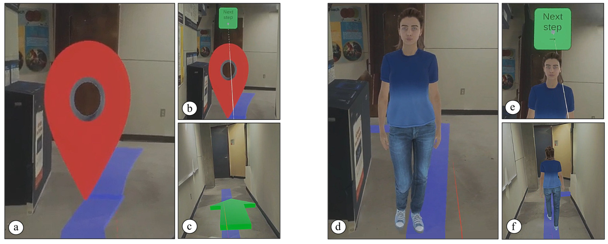

Abstract
Virtual experiences can significantly influence our perception and behavior in the real world, shaping how we interact with and navigate physical environments. In this paper, we examine the impact of learning navigation routes in an immersive virtual environment (IVE) on navigation performance and user experience in a corresponding real-world indoor setting. We developed a guide system with two distinct audiovisual representations: a human agent guide and a symbol-based guide. A preliminary user study (N = 10) was conducted to evaluate the system. While no significant differences were observed between the two guide conditions, the findings reveal valuable insights into user-perceived confidence and enjoyment during real-world navigation tasks. Contrary to our expectations, the symbol-based guide elicited slightly higher positive scores compared to the human agent guide. We discuss these findings and outline directions for future research.